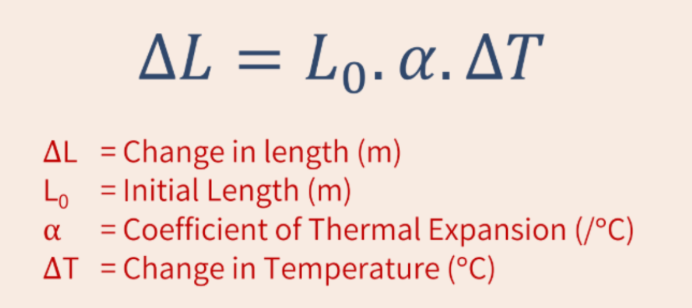
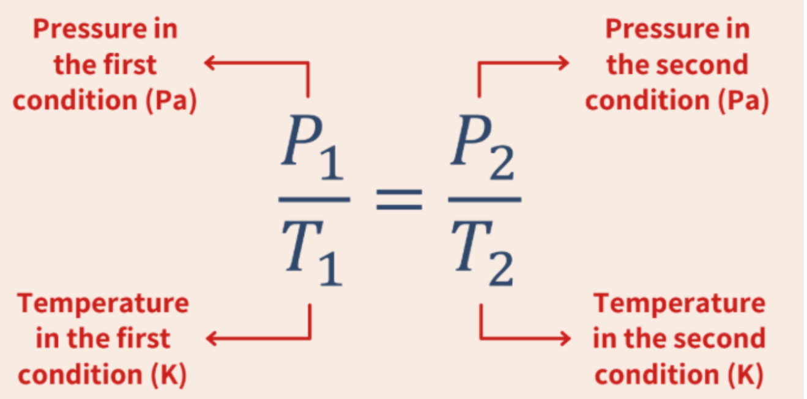
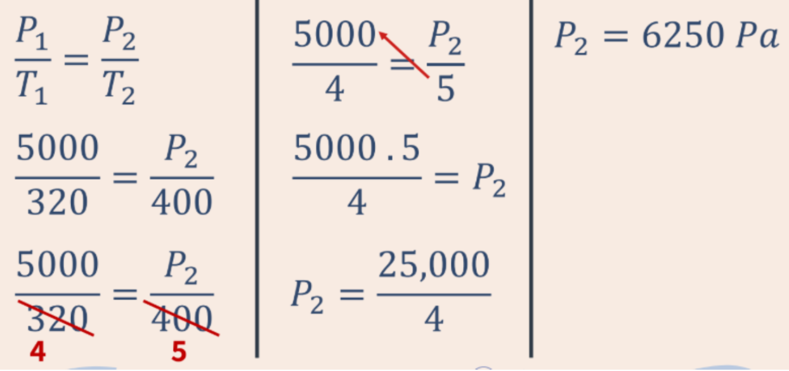

| Table of Contents Kinematics: Unit 2 |
|
| No. | Subtopic |
| 1.1 | Different Types of States of Matter |
| 1.2 | Brownian Motion |
| 1.3 | Thermal Expansion |
| 1.4 | Gay Lussac’s Gas Pressure Law |
Thermal and heat physics is the study of the physics of heat, temperature, and their relationship to energy and work. It focuses on how thermal energy (the internal kinetic energy of particles) transfers via conduction, convection, and radiation, affecting phase changes and causing thermal expansion.
Solids:
Liquids:
Gas:
Brownian Motion is the random movement of particles (in liquid or gas) due to the bombardment by the molecules that surround them.
This is often caused caused by numerous collisions with smaller particles
Temperature → the average kinetic energy of molecules in objects
Thermal energy → the total kinetic energy of molecules in objects.
When objects are heated, the particles or molecules move faster. (in liquids and gas) Within solids, molecules vibrate faster and take up more space but don’t move around. (only vibrate)
Thermal Expansion is the tendency of matter to change in volume in response to a change in temperature.

From the formula, we can see that the change in length is directly proportional to the initial length, CTE, and change in temperature.
Example:
When a metal is heated until its temperature increases by 50°C, it expands by 5 cm. If the same metal is heated until the temperature increases by 250°C, how much does it expand?
250/50=5 5*5=25 25cm
Coefficient of Thermal Expansion → a measure of how much a material expands or contracts when its temperature changes.

Gay Lussac’s Gas Pressure Law shows the correlation between temperature (in Kelvin) and the pressure of a gas (in Pascals)
Example:
A container with a pressure of 5000 Pa has a temperature of 47°C. If the container is heated until the temperature reaches 127°C, the pressure will change to ... (Volume inside the container is assumed to be the same)
Known: P1 = 5000 Pa
T1 = 47°C = 320 K
T2 = 107°C = 400 K
Wanted: Pressure after the container heated (P2)
Answer:
